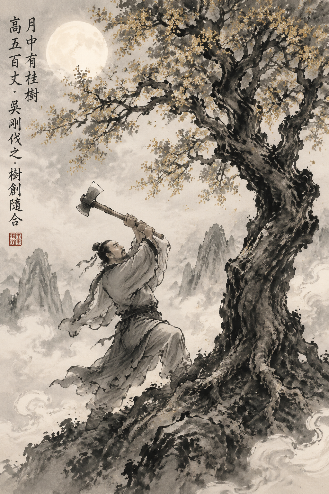

吴刚伐桂
卷一 · 天咫
吴刚伐桂
月中有桂树，高五百丈。吴刚学仙有过，被谪令伐树，树创随合，永无止境。
「旧言月中有桂，有蟾蜍，故异书言月桂高五百丈，下有一人常斫之，树创随合。人姓吴名刚，西河人，学仙有过，谪令伐树。」
现代汉语翻译
传说月亮里有一棵桂树，还有一只蟾蜍。所以奇书上说，月中的桂树高达五百丈，树下有一个人常年砍它，但树的伤口随即就愈合了。此人姓吴名刚，是西河人，因为学仙时犯了过错，所以被贬罚来砍这棵树。
译文由 Kimi 人工智能生成，仅供参考